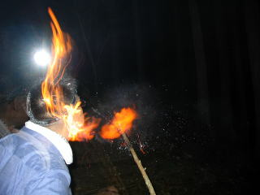

日付 '08 04/26-27
参加者 15名と1匹と1尾
撮影機器 COOLPIX S200
EXILIM EX-Z57
PowerShot A70
RICOH R8
LUMIX DMC-FX7
アルスの盛り放題ごはんで腹ごしらえ。
午後3時。バス組は先に出発。そして忘れもの。
バス停＆バス車内にて
30分後，自転車組（ママチャリ×1，MTB×2）が出発
左，八瀬 右，花尻橋。まだ余裕。
左，野村分かれ付近。表情窺えず。 右，途中越え。ママチャリおじさんの顔には疲労の色が…
花折トンネルへの上り。左のおじさん，必死のパッチ。
ここからは大原の里が一望できます。１速でヒーヒー登る自転車又はローギアでノロノロ上るバスだけの特権です。
午後６時。何とか平に到達。後は皆子山一帯で活動している，白いお父さん（ゴン）について行くだけ。

自転車だけなので１５分で寺谷出合に到着。お父さん，おやつをせびります。
いつも橋は苦手のお父さん。ちなみに午後４時前のバス組との遭遇時には鎖に繋がれていました。
原付スクーターで来た黒い人。林道はかなりゴツゴツします。
バス組と合流し，さっそく夕げを兼ねたファイアーが始まります。

小屋に戻って入って第２弾です。
朝，午前６時半。左，小屋２階 右，第２陣が撮影した，ほぼ同時刻の寺谷出合。一時駐輪場と化しています。
１３分後，第２陣が山小舎に到着。徹夜明けのお父さんがお出迎え。眼の下にクマができている。
新入生しか起きていないのでびっくり。
朝げの光景。何をやってもスベる４回生は８時のバスで帰宅。見送りはお父さん。
午前１１時。一部メンバーを残し，小屋裏の尾根線経由で山頂に出発。稜線までは結構な急こう配。這って進みます。
稜線に到着。やはり結構な急登。おじさんもお疲れです。
途中，マムシを発見。反射的に手を出すと救急車で堅田の琵琶湖大橋病院に運ばれる羽目になるので注意して通過。

正午，山頂に到着。いつも景色はビミョー。
小屋に戻り，ランチの支度。お父さんはちくわ風バームクーヘンが気になります。
完成。魚のすり身は入っていません。小麦粉のみです。
小屋の御神木。大切に使用しましょう。
午後３時半，記念写真撮影の後下山。
この寺谷出合の橋はKITWVが定期的に補修しています。
午後５時２０分，平のバス停着。
１時間後，部室に到着。ちょうど日が沈む。
 ちなみに，洛西寮の部屋はこんな感じです。 ちなみに，洛西寮の部屋はこんな感じです。
 活動記録に戻る 活動記録に戻る
|
|